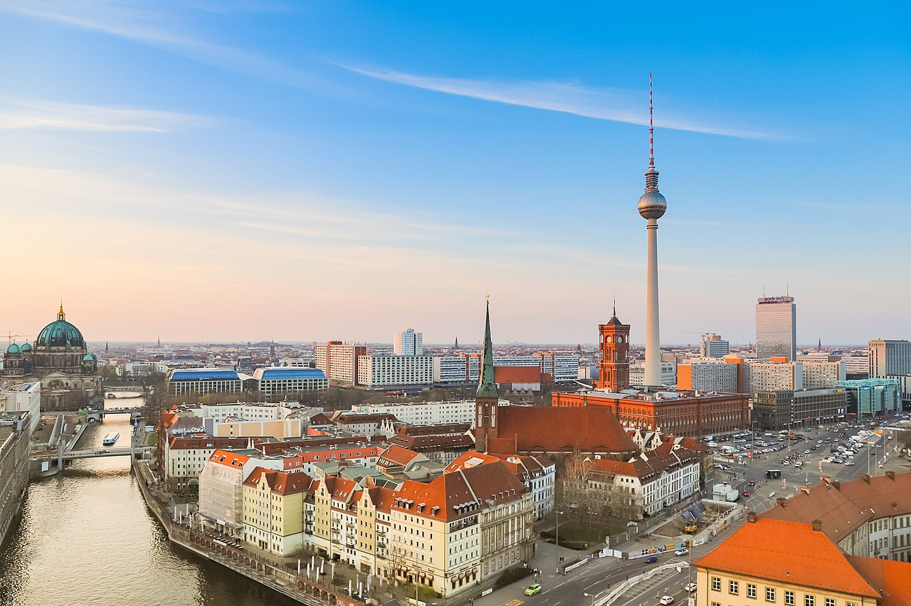
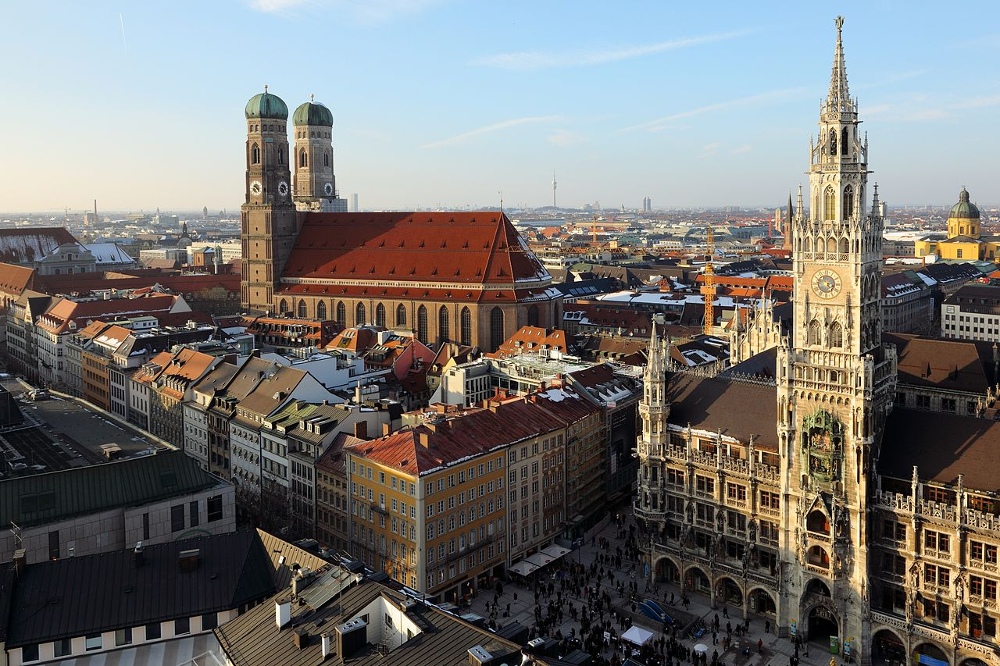
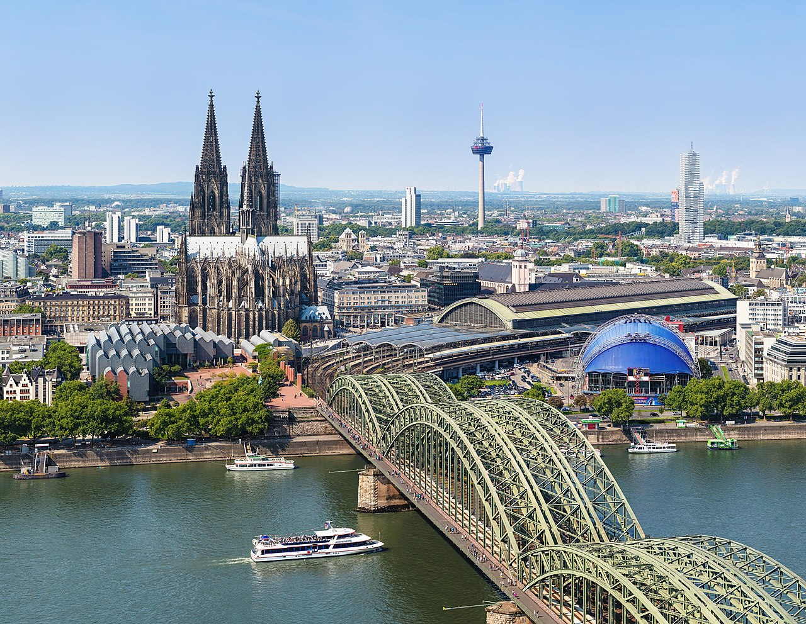

Germany the country
"Brief description of the country"
Germany, officially the Federal Republic of Germany, is a country in Central Europe. It is the second most populous country in Europe after Russia , and the most populous member state of the European Union. Germany is situated between the Baltic and North seas to the north, and the Alps to the south; it covers an area of 357,022 square kilometres (137,847 sq mi), with a population of over 83 million within its 16 constituent states. Germany borders Denmark to the north , Poland and the Czech Republic to the east, Austria and Switzerland to the south, and France, Luxembourg, Belgium, and the Netherlands to the west. The nation's capital and largest city is Berlin and its financial centre is Frankfurt; the largest urban area is the Ruhr.
Most of the beautiful places are in Germany
Next enjoy with some of the beautiful landscapes in Germany...
Germany is a beautiful country in Western Europe full of calming landscapes, forests, rivers, and mountains. This lovely country has a long and rich history and it is quite a popular tourist attraction as well as a study destination for international students.

Rothenburg ob der Tauber
Is well known for its well-preserved medieval old town, a destination for tourists from around the world.

Brandenburg Gate
Is one of the most iconic sights in today's vibrant Berlin. More than just Berlin's only surviving historical city gate, this site came to symbolise Berlin's Cold War division into East and West, since the fall of the Wall, a reunified Germany.

Cochem, Rhineland-Palatinate
For a town where the wine is just as good as the views, head to Cochem on the slopes of the Moselle River. The city sits in Germany's Mosel-Saar-Ruwer region, famous for its riesling grapes that grow in hillside vineyards.

Dresden city
Dresden (map) is a historic city in eastern Germany, situated approximately 200km south of Berlin. Renowned for its historic Baroque architecture, the city is the capital of the state of Saxony and boasts a rich cultural heritage.
Some general information about the country
Do you know about?...

- About the country
- - History
- - National Anthem
- Sports
- - Soccer
Brief guide to german culture
Do you know about?...

Main states of Germany
Look the most important...
| State | Area (Km2) | Capital |
|---|---|---|
| Baden-Wurtemberg | 10,01 | Stuttgart |
| Baviera | 19,76 | Múnich |
| Berlín | 0,25 | Berlín |
| Brandeburgo | 8,26 | Potsdam |
| Bremen | 0,11 | Bremen |
Main Universities of Germany
Look the most important too...
| Rank | University | City |
|---|---|---|
| 1 | LMU Munich | Munich |
| 2 | Tecnhnical University of Munich | Munich |
| 3 | Heidelberg University | Heidelberg |
| 4 | Humboldt University of Berlin | Berlin |
| 5 | RWTH Aachen University | Aachen |
Largest cities in Germany
Look the most important...
Germany has a number of large cities. There are 11 officially recognised metropolitan regions. The country's largest city is Berlin, while its largest urban area is the Ruhr.
|  | 
|
|
 |  |